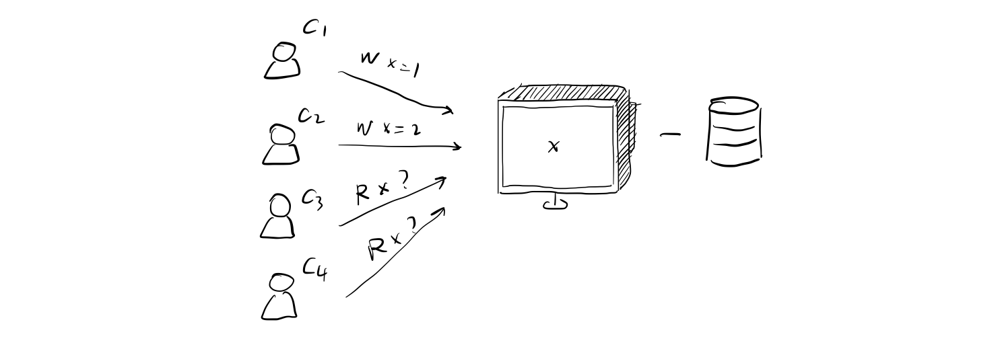
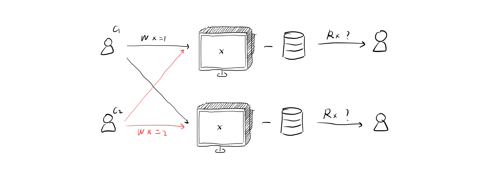
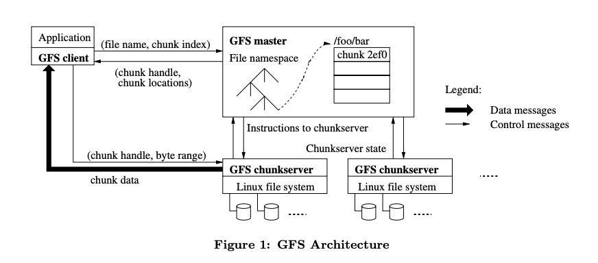
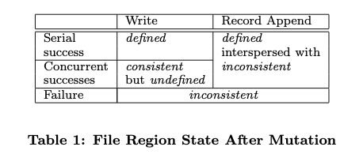
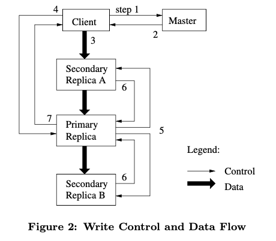
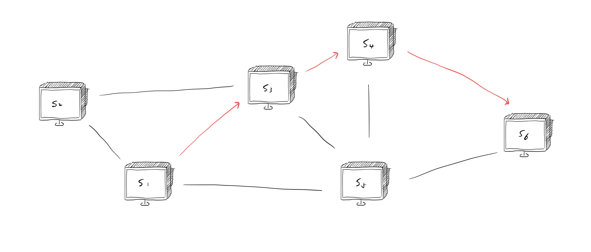
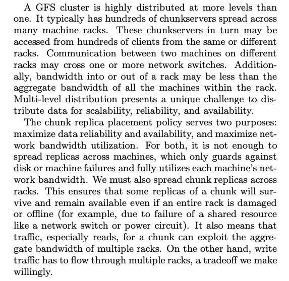

Google File System
Why distributed storage system are hard?
首先任何一个系统，尤其是文件存储系统，我们需要的是high performence。这就意味着你需要用很多server存储数据。
然而，一旦用了很多server或者机器，那就会导致一个问题，某些机器会failure，如果一个集群足够庞大，那么就会导致constant faults。
这就意味着，你需要设计一个具有Fault tolerance的系统。一般的解决思路就是备份数据。
如果引入了备份，就会导致一致性问题。
为了打造一个有strong consistency，就需要引入一些protocol，就会导致performence降低。
可以看到这是一个怪圈。It’s a fucking loop!
Consistency
理想情况下的一致性是指，不论有多少机器和存储器，都可以当作一个机器来看。当然，一个机器内部也会存在一些并发安全问题（当有多个client访问同一台机器时）。

Lock是一个解决consistency的方案。同时，也可以采取备份的方式去解决。但是，没有任何protocol支持的replication方案是不行的，下面就是没有任何protocol的方案。
可见没有解决一致性问题。C3C4客户读取的数据仍然是不可预测的。

GFS：Google File System
GFS设计旨在通过保留replication、Fault tolerence和consistency的前提下，提升性能。
GFS是Mapreduce的文件系统。
Key property：
- BIG：One big large dataset
- FAST：automatic sharding
- GLOBAL：all apps see same file system
- FAULT TOLERENCE：automatic
Design Assumptions
- 系统是由若干容易产生failure的廉价机器构建的。它必须能够持续的监视自己，而且能够检测、容错并且立刻从组建failure中恢复过来。
- 系统可以存储适量的大文件。我们期望能存储几百万的文件，每一个是100MB甚至更大。几个GB的文件应当是很常见的，所以他们需要有效的管理。小文件也要支持。
- 工作流主要包含两种读取操作：一种是大型数据流读取，另一种是小型随机读取。对于大型数据流读取，每一次读取操作读取大约几百KB，更常见的是1MB甚至更大。来自同一台client的连续读取操作通常会读取一个文件的连续区域。一个小型随机读取操作则会读取一个文件的任意部分。在意性能的应用通常会将小型读取组成batch并且sort，来提升读取性能。
- 工作流也有很多大型序列化写入操作，这些操作会把数据添加到文件后。典型的操作大小与读取的大小类似。一旦写入，文件很少会被再次改动。支持小型随机写入操作，但不需要讲求效率。
- 系统必须为并发修改文件的多个client有效实现一个被精细规定的语义。我们的文件通常使用生产者-消费者模型。几百个生产者，每一个机器运行一个，将会并发的在同一个文件append信息。带有一些同步损耗的原子性是必须的。文件可能在之后读取，也可能消费者会同时读取文件。
- 高带宽比低延时更重要。我们大多数的目标应用将快速处理大批量数据放在第一位，很少需要有严格的响应时间需求。
Interface
GFS提供类似于File system的接口。文件被层级式的目录组织起来，并且可以使用路径名称找到文件。系统支持create、delete、open、close、read以及write操作。GFS也包含snapshot和record append操作。
snapshot会以最低代价创建一个文件或者目录树的备份。record append允许多个client在保证原子性的前提下并发的在相同文件中append数据。
Architecture
如下图展示的这样，GFS集群有一个master和多个chunkserver，会被多个client请求。

每一个机器都是一个商用的linux机器，都是在此之上运行的一个用户层级的服务器程序。将chunkserver和一个client运行在同一个机器上是可行的，只要机器允许并且由于可能运行的不可靠的应用代码造成的低可靠性是可以接受的。
文件会被分割为固定大小的chuncks，每个chunk在创建阶段会被master分配一个不可修改的唯一的64bit的chunk handle。Chunkservers将chunk作为linux files存储到本地磁盘，由chunk handle和byte range两个参数，读写chunk。为了可靠性，每一个chunk会在不同的chunkserver下存在备份。默认而言，系统存储三个备份，当然用户也可以自己分配备份的数量。
Master维护所有文件系统的元数据。这包括命名空间，访问控制信息，文件到chunks的映射关系以及chunk的当前地址。它也会控制系统层面的活动，比如chunk lease management，garbage collection of orphaned chunks，以及chunk migration between chunkservers。Master通过HeartBeat信息与每个chunkserver周期性交互，传递指令或收集chunkserver的状态。
连接到每一个用户的GFS的client代码实现了文件系统的API，并且可以代表应用实现与master和chunkserver的读写。Client与master交互，获取操作的元数据，但所有的承载数据的操作会与chunkserver交互。
Client和chunkserver都不缓存文件数据。Client缓存只能提供很小的收益，因为大多数应用需要很大的文件，或者工作集太大而不能被缓存。不缓存简化了client，且由于消除了缓存相干问题，也能简化整体系统的设计。Chunkserver也不需要缓存数据，因为本机的Linux的缓存池以及保证了数据在内存中的访问频率。
Single Master
有一个Master可以极大的简化系统设计难度并且可以使master利用全局的信息作出成熟的替换和备份决策。然而，我们应当最小化master的读写参与度，防止它成为性能瓶颈。Clients从不会从master读取数据，它会问master应该与哪一个chunkserver交互。然后client会缓存这些元信息一段时间，进一步直接与chunkserver交互。
参考Architechture章节的图，解释一下一个简单的读操作的流程。
- 通过固定大小的chunk size参数，client将用户指定的文件名和byte偏置翻译成文件内部的chunk index。
- Client向master发送一个包含file name和chunk index的请求。
- Master回复一个对应的chunk handle和备份地址。
- Client将file name和chunk index作为key，chunk handle和备份地址为value，缓存这些信息。
- Client寻找最近的一个chunkserver，发送请求。请求制定了chunk handle和对于该chunk获取多少byte。
之后的一段时间内，在读取相同的chunk就不需要client-master的交互动作了。
Chunk Size
Chunk size在GFS中是64MB，比典型的文件系统中的block大得多。每个chunk备份在一个chunkserver中存储为一个普通的linux文件，并且当需要的时候可以进一步扩展。Lazy allocation避免了由于内部碎片引起的空间浪费，这个可能是对这样一个大chunk size的对大阻碍。
一个大的chunk size提供了几个重要的优势，
- 减少了client与master的交互需求，因为在同一块chunk的读写只需要与master交互一次，所以越大，交互的越少，就能使用户基本上都在读写文件。
- 因为有了大chunk，一个client可能更倾向于在这个给定的chunk上做很多操作，它可以减少网络为了维持TCP连接的开销。
- 减少了master上存储元数据的大小，这就能让元数据保存在内存中，加快数据交换速度
Metadata
Master存储了三个主要的元数据类型：文件和chunk的namespace，从文件到chunk到映射关系，每一个chunk备份的地址。所有的元数据都被保存在内存里。前两个类型（namespace和映射）通过登记修改记录到存储在master本地磁盘的operation log中，并且拷贝在其他远程机器上保持永久性。使用log，可以让系统稳定的、可靠的、简单的、master crash后没有一致性风险的更新master状态。Master并不会永久存储chunk地址，反之，会在master启动时询问每个chunkserver的chunk信息，以及当一个新的chunkserver加入集群时，也会询问。
In-Memmory Data Structures
因为metadata存在于内存，就意味着速度快。进一步说，对于master在后台扫描整个系统的状态来说是简单高效的。这个周期性扫描可以用于实现垃圾回收，在出现chunkserver failure时重备份，为了平衡负载和磁盘空间使用率采取chunk migration等情景。
这种方法的一个潜在的顾虑是系统有多少chunk，因为系统的容量被master有多少内存所限制。实际上，这个并不是一个很糟糕的限制。Master对于每一个64MB的chunk之需要64bytes就可以维护。大多数chunk都被填满了，因为大多数文件都含有很多chunk，除非文件末尾会填不满部分chunk。同样的，文件的namespace数据也需要不超过64bytes的空间，因为他使用prefix压缩方法压缩文件名。
如果要支持更大的文件系统，在master上扩充内存容量的代价可以让我们获得简单、可靠、高性能和灵活性，这是可以接受的。
Chunk Locations
Master不需要永久保存chunkserver有哪些chunk备份。它只需要在启动时拉去每个chunkserver的信息。然后可以通过HeartBeat消息，更新自己的信息。
另一种理解这个设计决定的方式是，意识到chunkserver是最终决定哪些chunk在它本地存储磁盘中是存在的。如果在master上永久存储这些信息是没有道理的，因为在chunkserver的错误可能导致chunk立刻消失（比如一个磁盘可能失效）或者一个操作可能会重命名chunkserver。
Operation Log
Operation log保存了修改metadata的历史信息。对于GFS来说，它是核心。它不仅仅作为一个metadata的永久记录，还可以作为逻辑时间线，定义并发操作的顺序。
由于operation log时临界资源，我们必须可靠的存储它并且保证之道metadata的改变成为persistent才可以给client暴露这些记录。否则，我们将会失去整个文件系统或最近的几次操作。
因此GFS将log备份到若干远程机器，并且仅当所有的log（locally和remotely）都完成了更新才对client作出回应。Master会打包几个log记录一起提交。
Master通过replay log来恢复文件系统的状态。为了最小化启动时间，我们必须确保log很小。Master会当log超过一定大小时设置一个chekckpoint，以便它可以载入最新的chekcpoints，并且恢复有限的log记录。Checkpoint时一个类似于压缩的B树，这个结构可以直接映射到内存并且可以不需要额外的解析来查询namespace。这个结构进一步加速了恢复时间。
由于构建一个checkpoint需要一些时间，master内部在一个新的chekcpoint被创建时不会延迟记录即将到来的改变。Master switch到一个新的log file并且在另一个线程创建新的checkpoint。新的checkpoint会包含switch前所有的改变，这个过程在有几百万文件的集群上花费几分钟。当完成后，它会被写到local和remote的master上。
系统恢复仅仅需要最新完成的checkpoint以及随后的log file。之前的chekcpoints以及log file可以被删除了。如果一个crash在checkpointing中发生，也不会影响正确性，因为recovery代码会检测这个并且跳过不完整的checkpoint。
Consistency Model
Guarantees by GFS
文件的命名空间的变化时原子性的。namespace的锁保证了原子性和正确性。Master的operation log定义了全局的操作顺序。

System Interactions
Leases and Mutation Order
Mutation是一个可以改变一个chunk数据的操作，比如说写操作或append操作。每一个mutation需要在所有的备份中进行更新。我们可以用leases来在多个备份之间维护一个固定的mutation次序。Master给其中一个备份机器租借一个chunk，我们叫做primary。剩下的其余备份机器叫secondary。Primary会从众多的mutation操作当中选择一个顺序。所有的备份则需要遵循 这个顺序来执行mutation。下图描述了详细的交互流程。

- 首先，client询问master哪个chunkserver保存了当前lease以及其他的备份地址。如果没有lease，master找一个备份分配一个。
- Master回复一个primary的标识符和其他备份的地址。Client会缓存这部分信息。
- Client以任意顺序将所有数据推到所有备份。每个chunkserver会在内部的LRU buffer cache中存储数据。通过解耦数据流和控制流，我们可以通过让数据流充分利用网络的拓扑结构，提升系统性能。
- 一旦所有的备份发现收到了数据，client就会向primary发送写指令。识别到之前的数据在哪之后，primary会为多个mutation操作分配序列号，然后将mutation应用到本地数据中。
- Primary向前传递写指令给其他所有的备份。备份按分配好的顺序执行mutation。
- 全部Secondary回复primary，说明都执行完了。
- Primary回复client。任何备份执行过程中遇到的错误都会回复给client。如果有错误，意味着写操作有可能在primary和secondary的子集执行成功了（如果primary有错，就不会为其它备份分配序列号），Client请求就被当作失败，那么就会导致有一些修改的区域在不同备份中不一致。我们的client代码通过重试失败的mutation解决了这种问题。它将会回到步骤3，一直执行到7，如此往复。
Data Flow
系统设计时将数据流和控制流解耦，这样可以充分利用网络。当来自client的控制流流向primary和secondary时，数据会从一个精心挑选的chunkserver路线线性的以流水线方式推动。目标是充分利用每一个机器的网络带宽，避免瓶颈和延迟问题。
下面的图说明了数据流的方法。

假设数据要从S1发送给S6，那么S1需要寻找朝着S6方向的最近的chunkserver，上图很明显时S3，S3找到S4，S4最终穿数据到S6。而且这是流水线的，S3不需要等S1传完所有数据才开始传给S4，只要接受到数据S3就开始传输了。
Atomic Record Appends
GFS提供了一个原子append操作叫做record append。
传统的写操作，client需要指定一个offset和data。并发的写操作在写同一个区域的时候不是序列化的：会导致这个区域的数据块包含来自多个client的数据。
采用record append，client只需要data。GFS会选取一个offset，然后把data原子性的添加到对应文件后，并且把offset返回给client。
Snapshot
Snapshot操作可以做到几乎瞬时拷贝一个文件和directory tree，同时也能保证最小化对正在进行的mutation的干扰。
Master Operation
Namespace Management and Locking
许多master的操作需要花费很长时间，例如，一个snapshot操作需要撤回被操作涵盖的所有chunk的chunkserver的租借。不应该在这个时间内阻止其他operation的操作，因此需要在namespace上使用lock保证正确的序列化。
不像传统的文件系统，GFS没有directory结构，也没有硬软连接的支持。GFS逻辑上将namespace当作一个查询表，负责维护全路径名称到元数据的映射。使用prefix compression，这就能存储到内存中。namespace树的每一个节点都有一个相关的读写锁。
每一个master操作需要获取一系列锁，假如在/d1/d2/…/dn/leaf，这个路径上操作，需要获取读锁/d1，/d1/d2，…，/d1/…/dn，也需要在/d1/d2/…/dn/leaf上获取读锁或写锁。
Replica Placement

Creation，Re-replication，Rebalancing
Chunk备份是因为三个原因存在的，chunk创建，chunk重备份，重均衡。
当master创建一个chunk时，需要先初始选择一个地方存放第一个chunk。它会考虑几点因素：
- 我们想将新的备份放在低于平均磁盘利用率的chunkserver上，平衡磁盘负载
- 我们想限制最近在每一个chunkserver上创建chunk的次数
- 我们想将备份分布在不同rack的chunkserver上
Re-replicates操作是当当前可用的备份数量低于用户指定的备份数量时才使用。
Master会周期性的rebalance备份：它检查当前备份的分布并且将备份移动到更好的磁盘空间，达到负载均衡。
Garbage Collection
文件被删除之后，GFS不会立即收回物理存储空间。Master的log会立刻记载删除操作。文件名会被重命名为删除的时间戳。在master的常规检查文件系统的命名空间时，它会删除已经存在三天的这样命名的文件。
直到此时，在之前，文件仍然可以在新的名称下读取，也可以撤回删除操作。